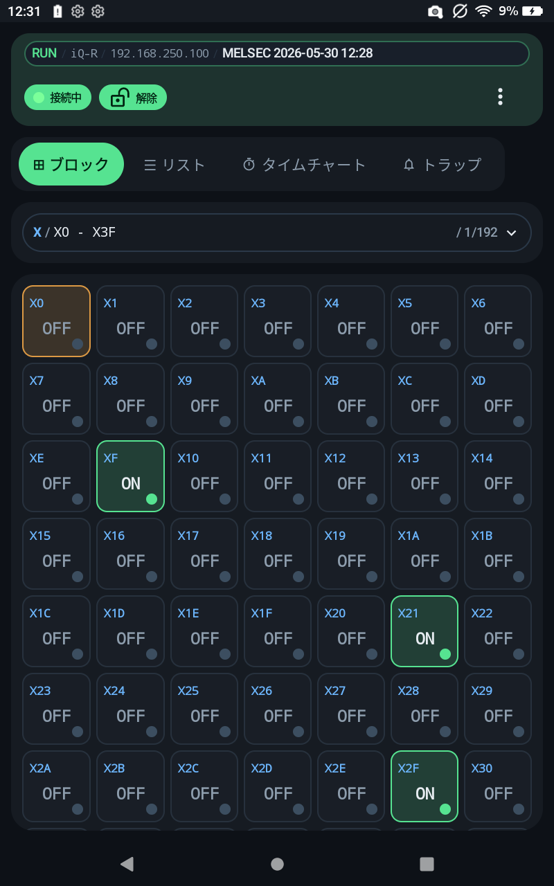

PLC IO Checker 操作マニュアル
MELSEC / KEYENCE PLC のデバイス監視、書込、記録、案件共有を行うための公開用マニュアルです。 画面と機能ごとにページを分けています。

安全上の注意
書込、CPU操作、トラップ監視は実設備の動作に影響する可能性があります。 アドレス、データ型、値、対象 PLC が正しいことを確認し、現場の安全手順に従って操作してください。
Start
まず見るページ
初回確認、アプリ入手、対応 PLC の確認に使う入口です。
PLC / Connection
PLC・接続
接続先、PLC 種別、MELSEC / KEYENCE の違い、デバイス表記を確認するページです。
Monitor / Operation
監視・操作
日常操作で使う監視、登録編集、書込、記録、トラップのページです。
Transfer / Data
転送・データ形式
QR、JSON、ProjectBuilder とのデータ連携を確認するページです。
Settings / License
設定・購入
アプリ設定、メニュー構成、ライセンス表示を確認するページです。
Public Information
公開情報
Store 申請や有料公開に必要な公開 URL、利用条件、購入・返金、未定 TODO のページです。
ProjectBuilder
ProjectBuilder
PC 側でプロジェクトを作成し、モバイルアプリへ案件として渡すためのページです。
Reference
参考・困ったとき
用語、FAQ、トラブル時の確認先をまとめたページです。
PLC Side Settings
PLC 側設定参考
PLC 側で確認する通信設定の参考ページです。機種別ページは dummy / TODO として枠だけ用意しています。
一覧
PLC 側設定参考
共通確認項目、機種別ページ一覧
MELSECiQ-RPLC 側設定 TODO
MELSECiQ-FPLC 側設定 TODO
MELSECiQ-LPLC 側設定 TODO
MELSECMX-RPLC 側設定 TODO
MELSECMX-FPLC 側設定 TODO
MELSECQnUDVPLC 側設定 TODO
MELSECQnUPLC 側設定 TODO
MELSECQCPUPLC 側設定 TODO
MELSECLCPUPLC 側設定 TODO
KEYENCEKV-X500PLC 側設定 TODO
KEYENCEKV-8000PLC 側設定 TODO
KEYENCEKV-7000PLC 側設定 TODO
KEYENCEKV-5000PLC 側設定 TODO